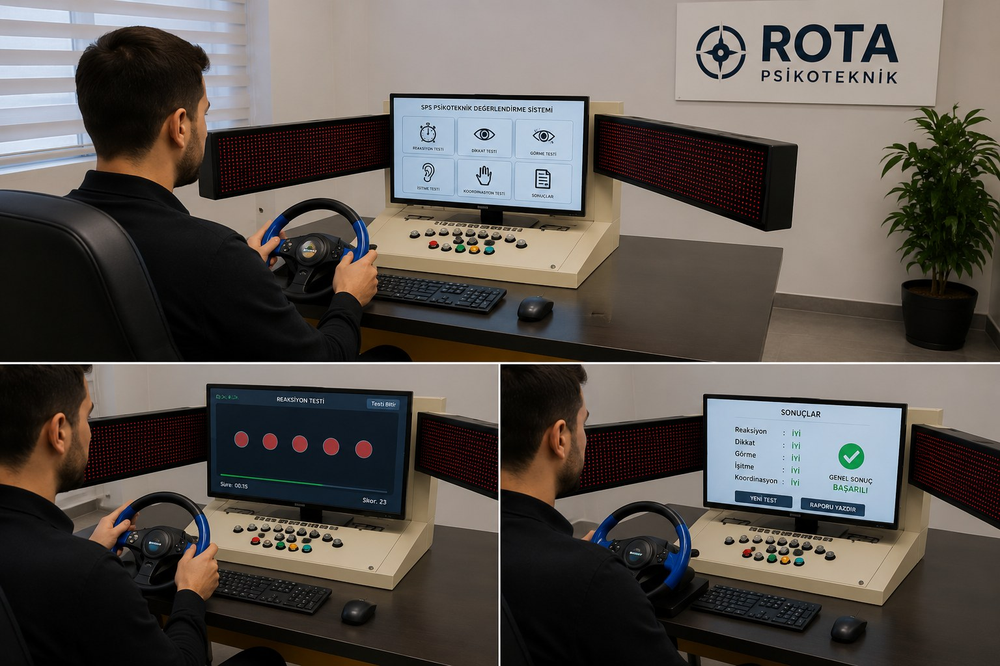

Büyükçekmece ve çevresinde ticari araç kullanan sürücüler için Sağlık Bakanlığı onaylı cihazlarımız ve uzman psikoloğumuz eşliğinde psikoteknik değerlendirme hizmeti veriyoruz.
Büyükçekmece bölgesinden rahatlıkla ulaşabileceğiniz merkezimizde test süreciniz en az 1 saat sürmektedir. Test sonrasında raporunuz oluşturulur ve 45 gün içerisinde Psikiyatri muayenesinden geçerek belgenizi e-Devlet sisteminde aktif olarak görüntüleyebilirsiniz. Kamyon, otobüs, taksi, servis ve tüm ticari araç sürücüleri yasal zorunluluk belgesini saatler içinde tamamlayabilir.
